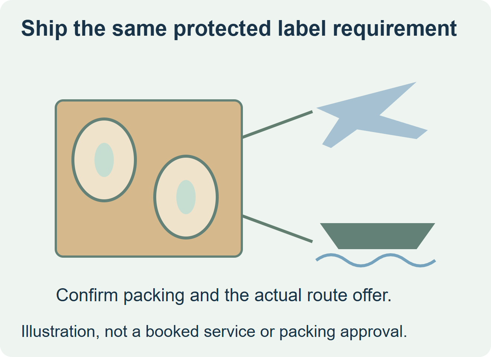
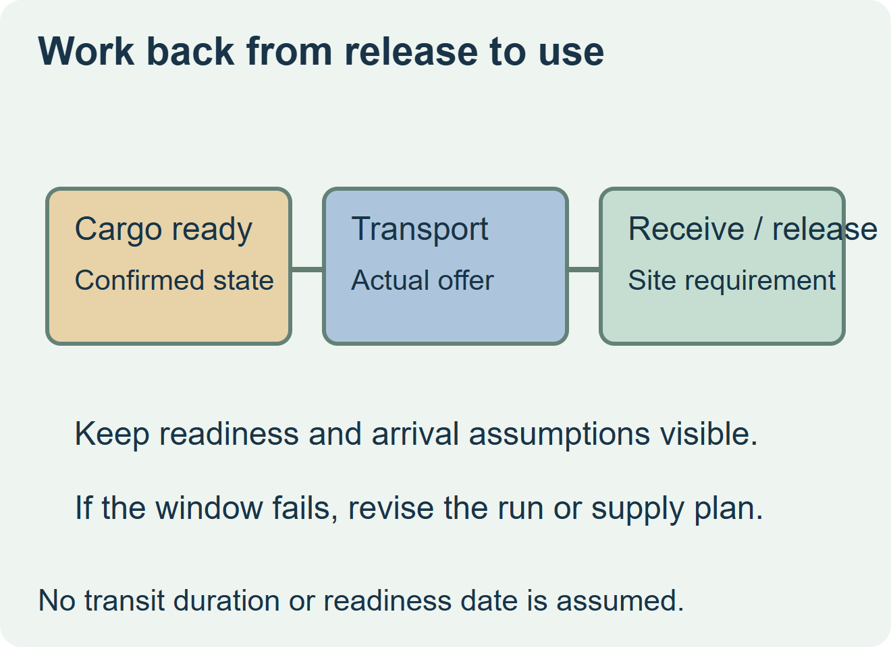

Request an air proposal when the actual label availability window is too short for the confirmed ocean route. Compare ocean for planned replenishment when the offered schedule, receiving work and stock condition can meet the run. Choose from current end-to-end offers; neither the lowest freight total nor the fastest advertised transit is enough to release the booking.


Start with when the co-packer can use the labels
Ask the receiving site for the event that matters: arrival at its door, receipt into stores, or authorization to load the rolls. Receiving checks and any material-specific preparation may sit between these events. Have the responsible teams identify the time they actually need. Do not invent a standard inspection or acclimatization interval.
Then obtain the supplier’s confirmed cargo-ready state and the carrier’s proposed route. Artwork approval, production completion, packing and dispatch are separate milestones. Paying for air does not make an unfinished batch ready for collection. If readiness is still provisional, request a conditional transport proposal and keep the booking decision open.
Maersk’s freight-mode framework considers urgency, cargo value, lane uncertainty and downstream operational importance. Those are useful inputs for label replenishment. Its published transit examples and cost comparisons are not quotations for this label order and are not reproduced here as delivery promises.
| Actual order condition | Proposal worth comparing | Question before selection |
|---|---|---|
| Packing window cannot accept the offered ocean arrival | Available air or another confirmed expedited route | Can cargo be collected in time, cleared and released for use under the actual offer? |
| Predictable replenishment with a workable receiving window | Ocean against air on the same cargo and endpoint | Do total charges, packing and stock-holding consequences favor the slower route? |
| Only part of the label requirement is immediately needed | A complete urgent release with a separately scoped balance | Does the first release contain every required component and actual trial/setup allowance? |
| Neither route supports the required use date | Revised packing schedule or another confirmed supply plan | Which production commitment changes rather than pretending freight solved the gap? |


Compare one packed requirement at one receiving endpoint
Give each freight provider the same carton count, outer dimensions and gross weights, destination and cargo-ready information. Ask what origin handling, clearance, destination charges and final delivery the offer includes. Ocean consolidation or a small air shipment can have charges not captured by a headline rate. Enter confirmed costs and identify open items; do not assume a universal minimum or duty percentage.
Use the label supplier’s actual packing proposal. Edge protection, moisture protection and identity by SKU must remain suitable for the proposed journey. Do not remove necessary packing to reduce a freight estimate, or assume a sea shipment permits storage conditions outside the material guidance. Ask the supplier and forwarder to confirm the arrangement.
Use the smallest complete urgent requirement, where practical
For a hypothetical beverage launch, the first run needs matched front and back labels while later flavors are not yet required. Compare a supported urgent release of that complete set with shipping the entire order by air. The remaining balance must have its own route, identity and release record. An early carton of front labels alone cannot support the bottling run.
Keep the carrier’s estimated or committed event wording intact, along with quotation validity and relevant exclusions. If a change consumes the buffer, obtain a revised proposal rather than copying the old arrival date. ZFU’s printed-label inquiry does not guarantee a freight mode, customs arrangement, delivery time or delay compensation; each requires the actual project offer.
Discuss the unresolved label requirement
Send label quantities and components, confirmed cargo-ready state, packed dimensions/weights, destination/postcode and required receiving/release-to-use event. Review food label options and prepare a label specification inquiry. The contact page opens an email draft and lists email or WhatsApp for attachments. Supply, proof options, testing, pricing and timing require project confirmation.